Subsurface-Offset Image Volumes
Extended Imaging, Velocity Analysis, and the Road to FWI
Schools of EAS, CSE, ECE — Georgia Institute of Technology
2026-03-16


Subsurface Image Volumes and Migration Velocity Analyses
Felix J. Herrmann
School of Earth and Ocean Sciences — Georgia Institute of Technology
Based on Hou and Symes (2015), Hou and Symes (2016), and Hou and Symes (2018).
Outline
- Motivation — Why extend the image?
- Born modeling recap — Connection to RTM and LSM lectures
- The Born inverse problem — Overdetermination and velocity dependence
- Extended Born modeling — Subsurface-offset extension
- Extended imaging operators — RTM vs. approximate inverse
- Preconditioning — Left and right weight operators
- Extended least-squares migration — Fitting data with any velocity
- Weighted conjugate gradient — Accelerating convergence
- DSO velocity analysis — Focusing as a velocity criterion
- Numerical examples — Marmousi and field data
- Limitations of WEMVA — Artifacts and the road to FWI
William W. Symes
Noah Harding Professor Emeritus
Computational & Applied Mathematics, Rice University
- Founded The Rice Inversion Project (TRIP) — 25+ years of industry-sponsored research
- Pioneered differential semblance optimization for migration velocity analysis
- SIAM Fellow; Desiderius Erasmus Prize (EAGE, 2015); Ralph E. Kleinman Prize (SIAM)
- Key insight: use the approximate inverse (not the adjoint) for velocity analysis
Motivation
Dual Purpose of Subsurface-Offset Image Gathers
Subsurface-offset common-image gathers (CIGs) serve two purposes:
- Migration-velocity analysis: Focusing of CIGs or flatness of common-angle gathers indicates the velocity model is correct
- Directional scattering information: When the velocity model is correct, CIGs contain amplitude-versus-angle (AVA/AVP) information
This lecture
We focus on velocity model building — using the extended image volume to update the background velocity \(v_0\). The directional/AVA aspect will be covered later.
Recall: The Two-Parameter Inverse Problem
From our RTM and LSM lectures, we know:
- RTM computes the gradient of the FWI objective — it is the adjoint \(\mathbf{F}^T\), not the inverse
- LSM solves \(\mathbf{F}^T\mathbf{F}\,\delta\mathbf{m} = \mathbf{F}^T\mathbf{d}\) to deconvolve illumination effects
- Both require a kinematically correct background velocity \(v_0\)
Key question
What if \(v_0\) is wrong? Can we still extract useful information from the image to update the velocity?
Born Modeling Recap
Connection to Previous Lectures
Born Approximation — Continuous Form
The velocity is decomposed as \(v(\mathbf{x}) = v_0(\mathbf{x}) + \delta v(\mathbf{x})\), where \(v_0\) is smooth and \(\delta v\) contains reflectors (Hou and Symes 2015).
The Born modeling operator \(F[v_0]\) maps reflectivity \(\delta v\) to scattered data:
\[ (F[v_0]\delta v)(\mathbf{x}_s, \mathbf{x}_r, t) = \frac{\partial^2}{\partial t^2} \int d\mathbf{x}\, d\tau\, G(\mathbf{x}_s, \mathbf{x}, \tau) \frac{2\delta v(\mathbf{x})}{v_0(\mathbf{x})^3} G(\mathbf{x}, \mathbf{x}_r, t - \tau) \tag{1}\]
This is Equation 6 of Hou and Symes (2018).
Connection to Lecture Notation (RTM)
In the discrete notation of our RTM lecture:
| Continuous (Papers) | Discrete (Lecture A) |
|---|---|
| \(F[v_0]\,\delta v = \delta d\) | \(\mathbf{F}\,\delta\mathbf{m} = \delta\mathbf{d}\) |
| \(G(\mathbf{x}_s, \mathbf{x}, t)\) | \(\mathbf{A}^{-1}(\mathbf{m})\,\mathbf{q}_s\) |
| \(F^*[v_0]\,\delta d\) (RTM) | \(\mathbf{F}^T\,\delta\mathbf{d}\) (adjoint) |
| Imaging condition | \([\nabla_\mathbf{m} J]_i = \sum_s \sum_k v_s(x_i,t_k)\,\ddot{u}_s(x_i,t_k)\,\Delta t\) |
Note
The Born modeling operator \(F[v_0]\) in the papers corresponds to the stacked Jacobians \(\mathbf{F} = [\mathbf{J}_1^T, \ldots, \mathbf{J}_{n_s}^T]^T\) from our LSM lecture, where \(\mathbf{J}_i = -\mathbf{P}_r \mathbf{A}^{-1}[\mathbf{m}_0]\,\text{diag}(\ddot{\mathbf{u}}_i^0)\).
The Born Inverse Problem
The Born inverse problem seeks \(v_0\) and \(\delta v\) such that \(F[v_0]\,\delta v \approx d\) (Hou and Symes 2018).
- This corresponds to the LS-RTM problem we discussed before in class
- Data fit is impossible unless \(v_0\) is kinematically correct to within a half-period error in traveltime prediction (Symes 2008)
- This is because we are solving an overdetermined problem: the data dimension exceeds the model dimension (e.g., 5D data vs. 3D model)
- Data fit is only possible in the special case of correct velocity
The way out
If \(\delta v\) is extended to depend on an extra dimension (subsurface offset \(h\)), i.e., replaced by \(\delta\bar{v}(\mathbf{x}, h)\), then any model-consistent data can be fit with essentially any \(v_0\) by proper choice of \(\delta\bar{v}\).
Extended Born Modeling
Subsurface-Offset Extension
Subsurface Offset — The Idea
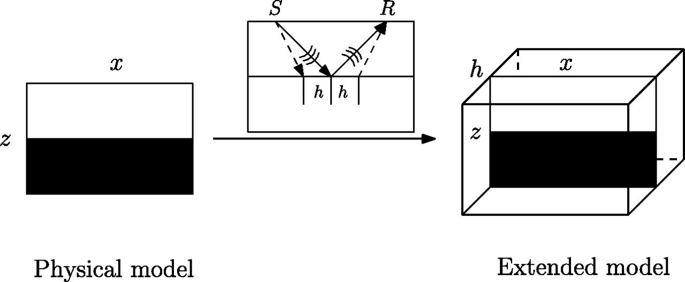
Sketch of the subsurface offset extension. The subsurface offset \(h\) is half the distance between subsurface scattering points. This extension allows stress to produce strain at a distance (Hou and Symes 2016).
Extended Born Modeling Operator
The reflectivity \(\delta v(\mathbf{x})\) is replaced by \(\delta\bar{v}(\mathbf{x}, h)\), and the extended Born modeling operator \(\bar{F}[v_0]\) is defined as (Hou and Symes 2018, Eq. 7):
\[ (\bar{F}[v_0]\delta\bar{v})(\mathbf{x}_s, \mathbf{x}_r, t) = \frac{\partial^2}{\partial t^2} \int d\mathbf{x}\, dh\, d\tau\, G(\mathbf{x}_s, \mathbf{x} - h, \tau) \frac{2\delta\bar{v}(\mathbf{x}, h)}{v_0(\mathbf{x})^3} G(\mathbf{x} + h, \mathbf{x}_r, t - \tau) \tag{2}\]
Here \(h\) is half the distance between sunken source and sunken receiver in Claerbout’s survey-sinking imaging condition (Claerbout 1985).
Physical meaning: We now allow reflection at a distance — a nonphysical extension that matches the model dimension with the data dimension.
Extended Imaging Operator (RTM)
The extended imaging operator is the adjoint of \(\bar{F}\) — i.e., extended RTM (Hou and Symes 2018, Eq. 8):
\[ I(\mathbf{x}, h) = (\bar{F}^*[v_0]\,d)(\mathbf{x}, h) = \frac{2}{v_0(\mathbf{x})^3} \int d\mathbf{x}_s\, d\mathbf{x}_r\, dt\, d\tau\, G(\mathbf{x}_s, \mathbf{x} - h, \tau)\, G(\mathbf{x} + h, \mathbf{x}_r, t - \tau) \frac{\partial^2}{\partial t^2} d(\mathbf{x}_s, \mathbf{x}_r, t) \tag{3}\]
In our lecture notation, the extended RTM corresponds to:
\[\boldsymbol{\delta}\bar{\mathbf{v}}[\mathbf{x}, h_x]=\bar{\mathbf{F}}^T\,\delta\mathbf{d}=\sum_s\sum_t\mathbf{v}_s[\mathbf{x}+h_x]\ddot{\mathbf{u}}_s[\mathbf{x}-h_x,t]\]
where \(\bar{\mathbf{F}}\) now depends on both spatial position \(\mathbf{x}\) and subsurface offset \(h\). Corresponds to the cross-covariance between the forward and adjoint wavefields.
Reflection Data
We define the reflection data as the difference between nonlinear data and data simulated in the background-velocity model (Hou and Symes 2018, Eq. 3):
\[ \delta d = \mathcal{F}[v] - \mathcal{F}[v_0] \approx F[v_0]\,\delta v \]
where \(\mathcal{F}[v]\) is the nonlinear forward modeling operator mapping velocity to data.
What Focusing Tells Us
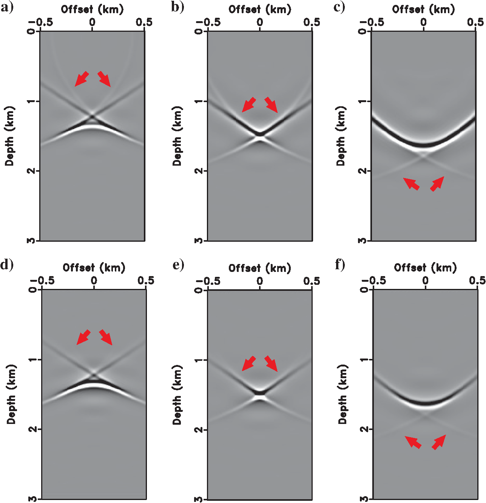
Tip
Energy focuses at \(h = 0\) with correct velocity and spreads to nonzero \(h\) when velocity is incorrect.
Approximate Inverse Operator
From Adjoint to Inversion
Paper A: Simple Model Setup
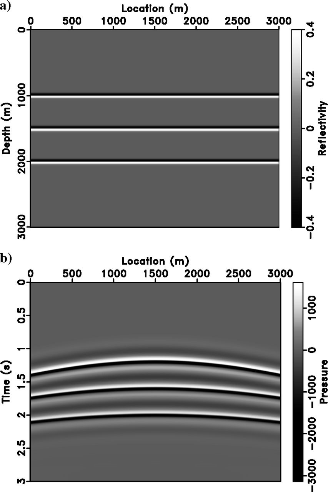
Extended RTM vs. Extended Inversion
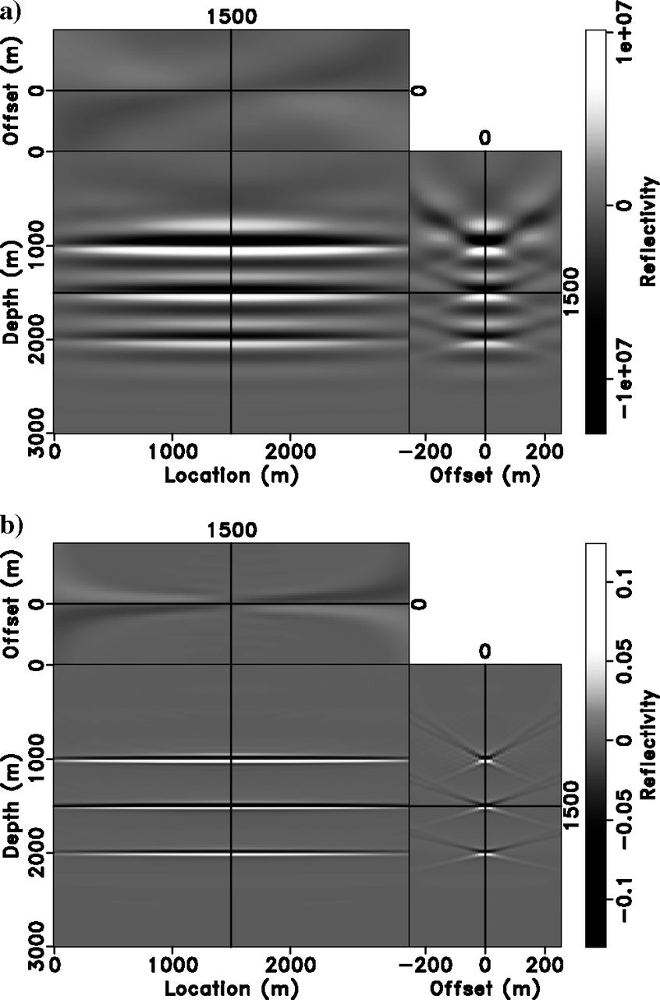
Data Fit Verification
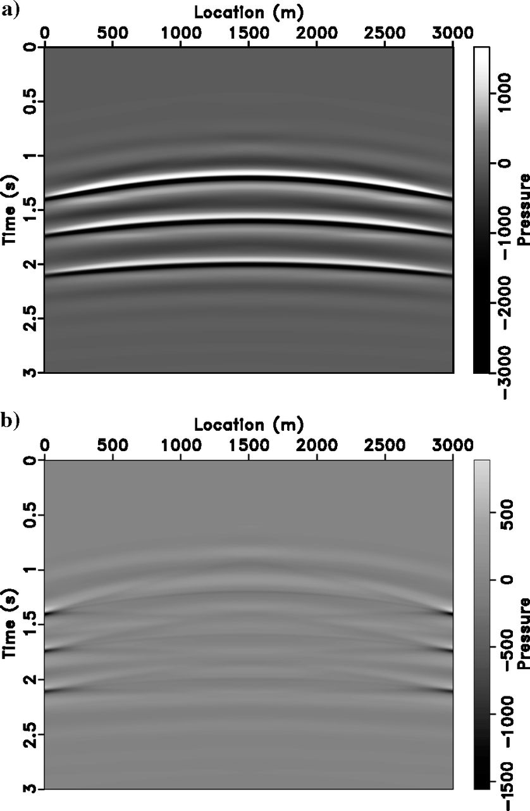
Approximate Inverse — Main Result
The approximate inverse to the extended Born modeling operator takes the form (Hou and Symes 2015, Eq. 1):
\[ \bar{F}^\dagger[v_0] = W_{\text{model}}[v_0]\; \bar{F}^*[v_0]\; W_{\text{data}}[v_0] \tag{4}\]
In our LSM lecture notation, this corresponds to left and right preconditioning:
\[ \tilde{\mathbf{m}} = \mathbf{M}_R^{-1}\,\tilde{\mathbf{u}}, \quad \hat{\mathbf{F}} = \mathbf{M}_L^{-1}\,\mathbf{F}\,\mathbf{M}_R^{-1} \]
where:
- \(W_{\text{data}}[v_0]\) acts as the right preconditioner \(\mathbf{M}_L^{-1}\) (applied to data before migration)
- \(W_{\text{model}}[v_0]\) acts as the left preconditioner \(\mathbf{M}_R^{-1}\) (applied to image after migration)
Weight Operators
The weight operators that make \(\bar{F}\) approximately unitary (Hou and Symes 2018, Eq. 10):
\[ W_{\text{model}}^{-1} = -8v^4 D_z Q, \qquad W_{\text{data}} = I_t^3\, D_{z_s}\, D_{z_r} \]
where:
- \(I_t\) = time integration operator
- \(D_{z_s}, D_{z_r}\) = source and receiver depth derivatives
- \(D_z\) = depth derivative in image domain
- \(Q \approx 1\) near \(h = 0\) (neglected in practice)
Note
\(W_{\text{data}}\) depends only on \(v_0\) near sources and receivers — independent of the deep velocity structure. The computational cost of \(\bar{F}^\dagger\) is roughly the same as extended RTM. Approximately unitary means that the adjoint is close to the inverse and that most enegry/information is preserved.
Inversion with Incorrect Velocity
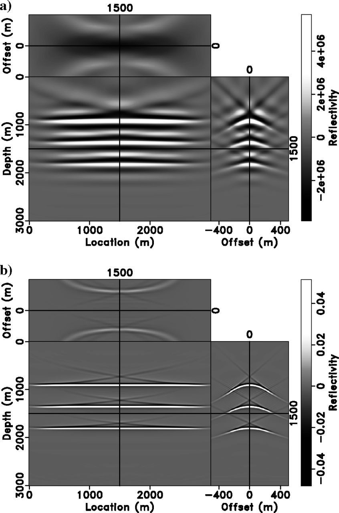
Data Fit with Wrong Velocity
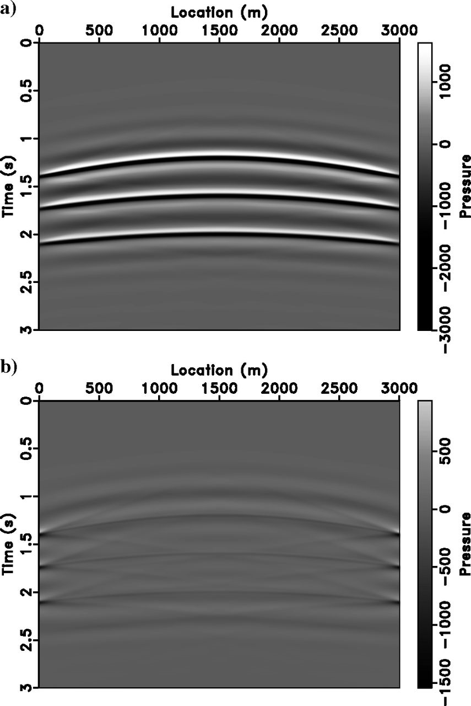
Nonextended Inversion Result
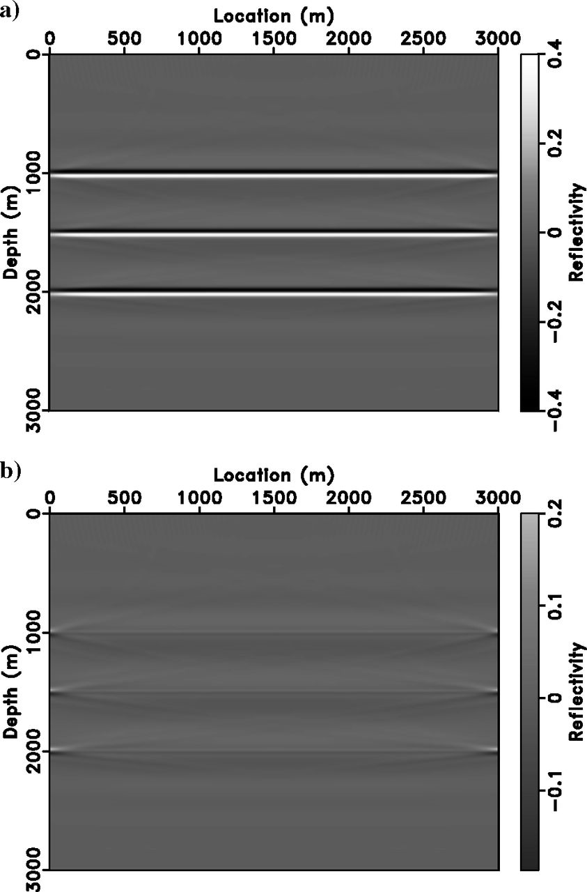
Gaussian Lens Example
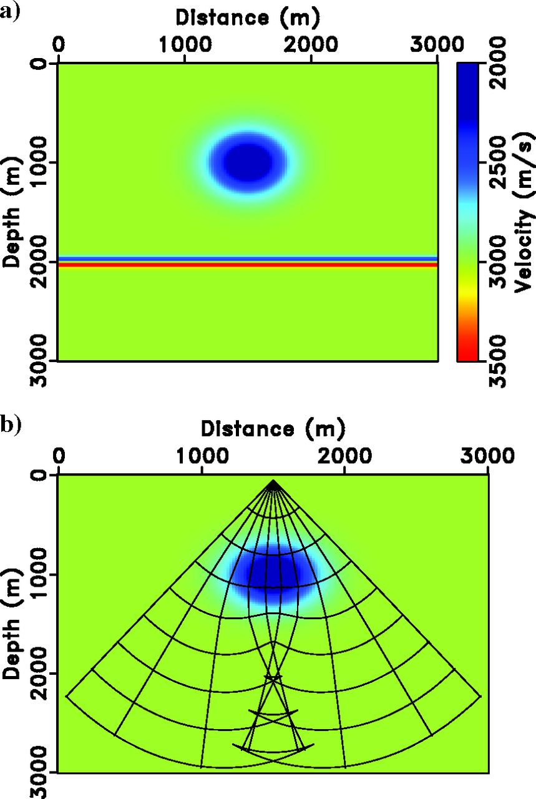
Gaussian Lens — Inversion Results
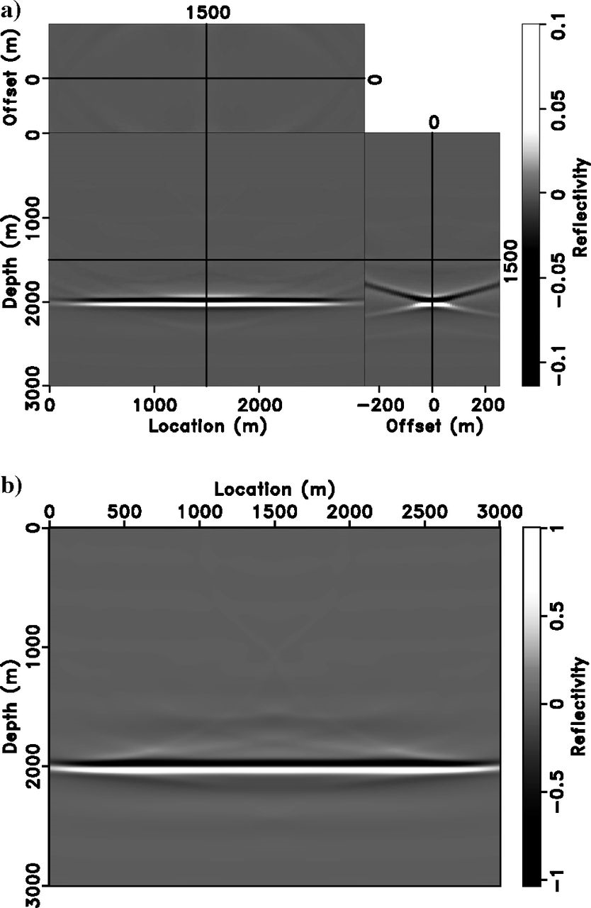
Gaussian Lens — Data Fit
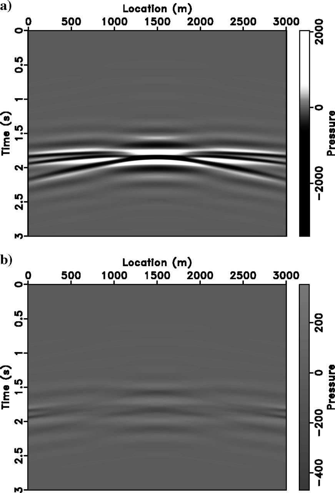
Extended Least-Squares Migration
Fitting Data with Any Velocity
LSM vs. ELSM — The Key Difference
From our LSM lecture, the least-squares objective is:
\[ J_{\text{LS}} = \frac{1}{2}\|\mathbf{F}\,\delta\mathbf{m} - \delta\mathbf{d}\|^2 \]
Extended LSM replaces \(F\) by \(\bar{F}\) and \(\delta v\) by \(\delta\bar{v}(\mathbf{x}, h)\) (Hou and Symes 2016):
\[ J_{\text{ELSM}} = \frac{1}{2}\|\bar{F}[v_0]\,\delta\bar{v} - \delta d\|^2 \]
- With the extra offset dimension, the model dimension matches the data dimension
- ELSM can fit data with correct or incorrect velocity
- Correct velocity \(\Rightarrow\) energy focuses at \(h = 0\)
- Incorrect velocity \(\Rightarrow\) energy spreads to nonzero \(h\), but data is still fit
LSM: Correct vs. Wrong Velocity
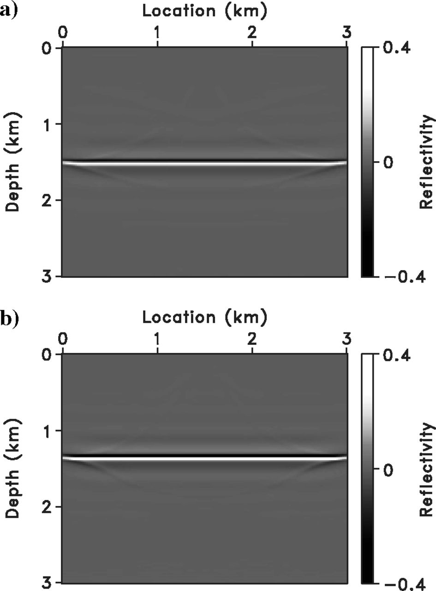
ELSM: Correct vs. Wrong Velocity
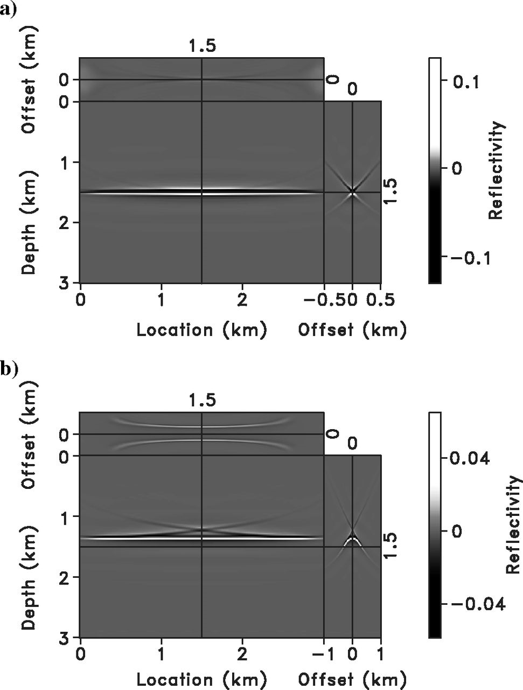
Tip
With incorrect velocity, the image is not focused at \(h = 0\) but the data is still fit. The offset range must be larger to accommodate the velocity error.
Convergence: LSM vs. ELSM
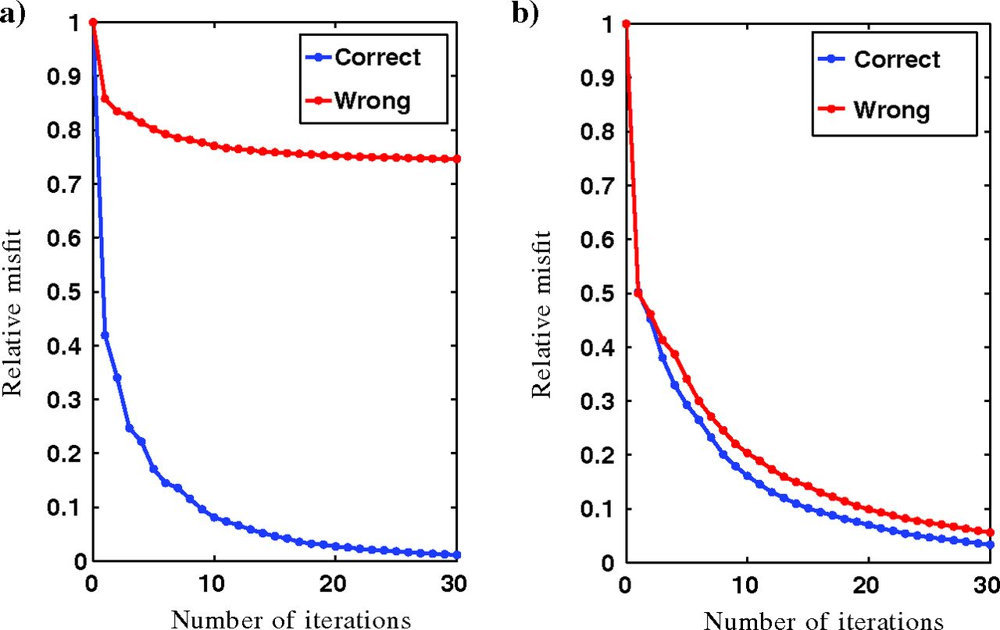
Weighted Conjugate Gradient
Accelerating ELSM Convergence
The Unitarity Property
Because \(\bar{F}^\dagger \bar{F} \approx I\) (the extended Born operator is approximately unitary w.r.t. weighted norms), CG with weighted norms converges dramatically faster (Hou and Symes 2016).
The weighted CG uses inner products:
\[ \langle \delta\bar{v}_1, \delta\bar{v}_2 \rangle_{\text{model}} = \sum_{x,z,h} \delta\bar{v}_1(x,z,h)\,(W_{\text{model}}\,\delta\bar{v}_2)(x,z,h) \]
\[ \langle d_1, d_2 \rangle_{\text{data}} = \sum_{s,r,t} d_1(\mathbf{x}_s, \mathbf{x}_r, t)\,(W_{\text{data}}\, d_2)(\mathbf{x}_s, \mathbf{x}_r, t) \]
Algorithm: Weighted Conjugate Gradient
Algorithm 1 from Hou and Symes (2016). Inputs: operators \(\bar{F}\), \(\bar{F}^\dagger\), data \(\delta d\), initial estimate \(\delta\bar{v}_0\).
- \(z_0 \leftarrow \bar{F}^\dagger(\delta d - \bar{F}\,\delta\bar{v}_0)\)
- \(p_0 \leftarrow z_0\), \(\quad k \leftarrow 0\)
- repeat
- \(\quad \alpha_k \leftarrow \dfrac{\langle z_k, z_k \rangle_{\text{model}}}{\langle \bar{F}\,p_k, \bar{F}\,p_k \rangle_{\text{data}}}\)
- \(\quad \delta\bar{v}_{k+1} \leftarrow \delta\bar{v}_k + \alpha_k\, p_k\)
- \(\quad z_{k+1} \leftarrow z_k - \alpha_k\, \bar{F}^\dagger \bar{F}\, p_k\)
- \(\quad \beta_{k+1} \leftarrow \dfrac{\langle z_{k+1}, z_{k+1} \rangle_{\text{model}}}{\langle z_k, z_k \rangle_{\text{model}}}\)
- \(\quad p_{k+1} \leftarrow z_{k+1} + \beta_{k+1}\, p_k\)
- \(\quad k \leftarrow k + 1\)
- until convergence
Note
Each iteration costs roughly the same as standard CG — one demigration (\(\bar{F}\)) and one migration (\(\bar{F}^\dagger\)). The weights add negligible cost.
Simple Model — CG vs. WCG
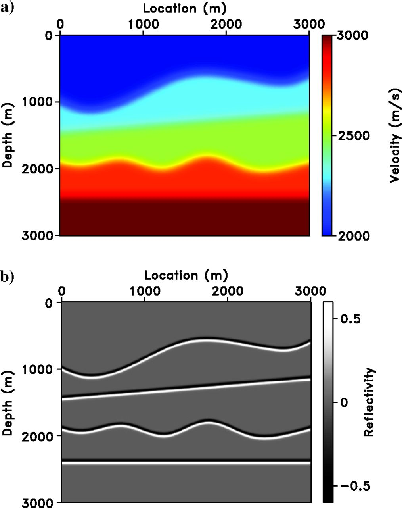
ELSM Results — CG vs. WCG
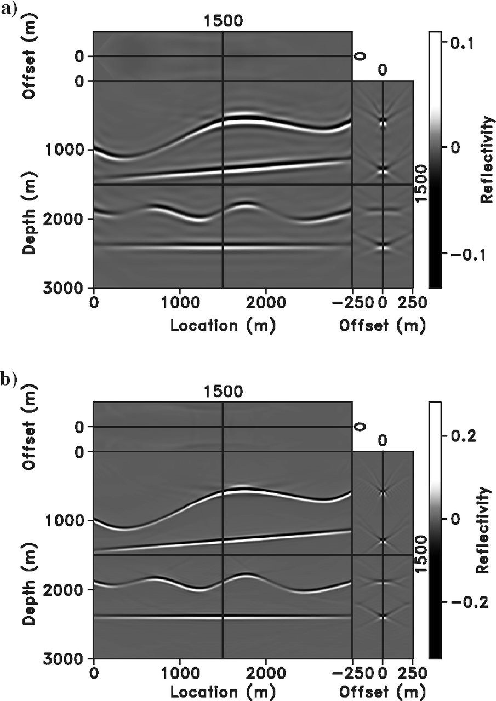
Physical Image from WCG
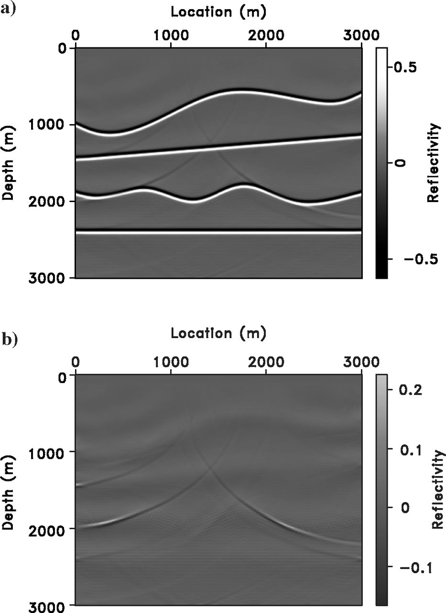
Marmousi Examples
Testing on a Realistic Model
Marmousi Model Setup
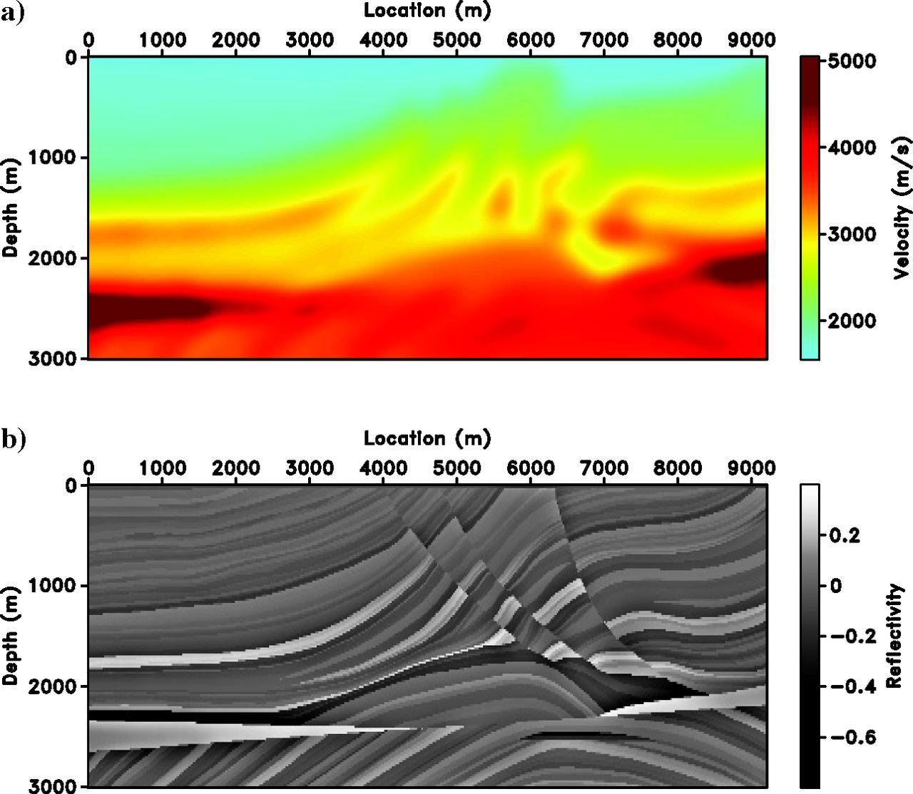
Marmousi — ELSM Results
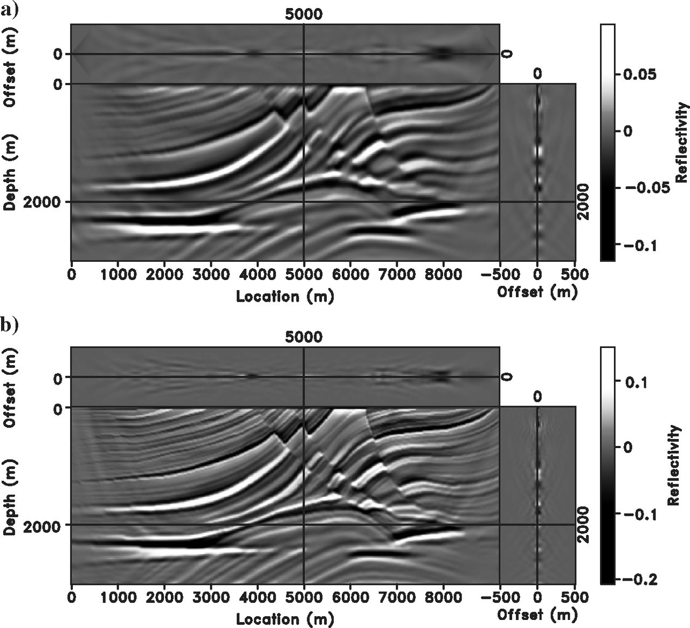
Marmousi — Stacked Images
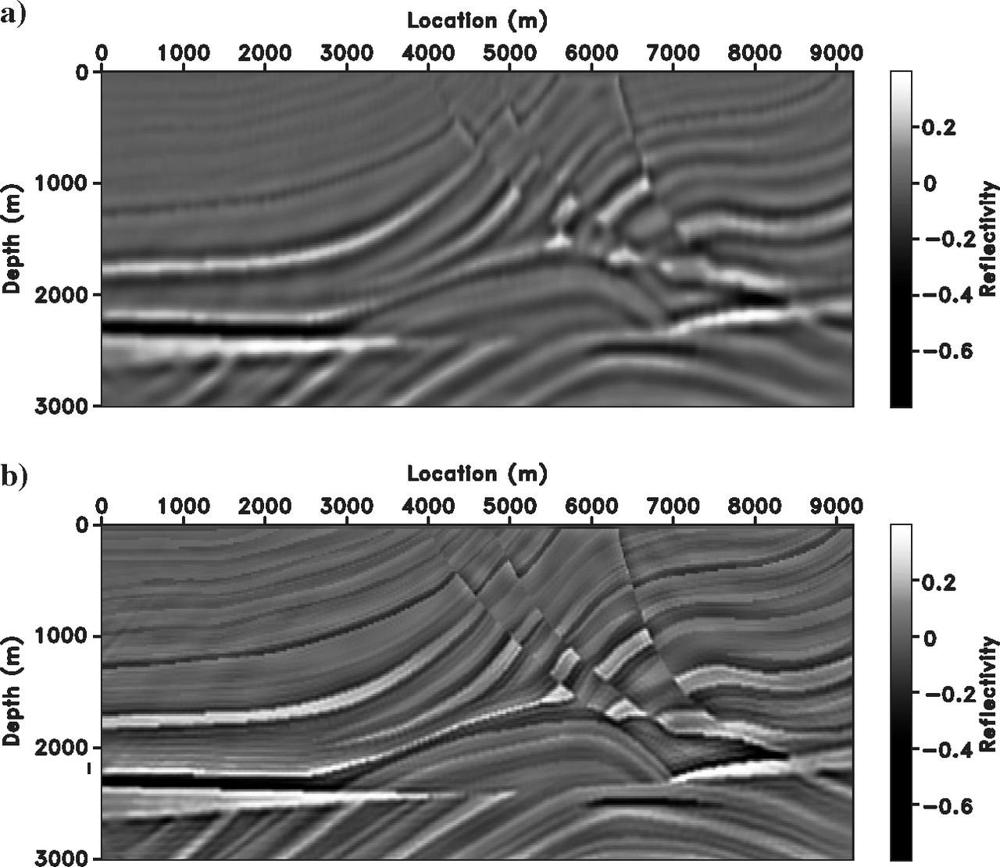
Marmousi — Data Fit
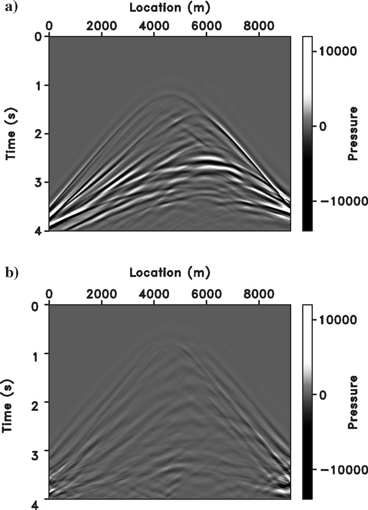
Tip
The residual is amplified by a factor of 10 — the actual misfit is very small, confirming accurate data fit.
Marmousi — Wrong Velocity
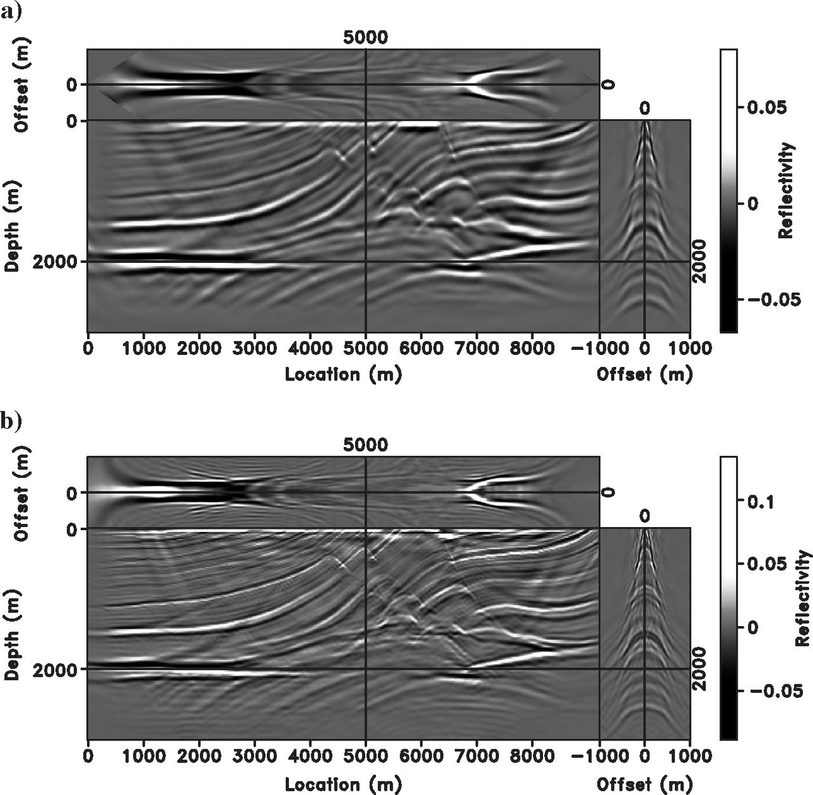
Important
The image is not focused for the poor background velocity, yet data is fit (as in Figure 14). The offset range must be doubled (\([-1000, 1000]\) m) to accommodate the velocity error. This is the key feature exploited for velocity analysis.
Marmousi — Convergence Comparison
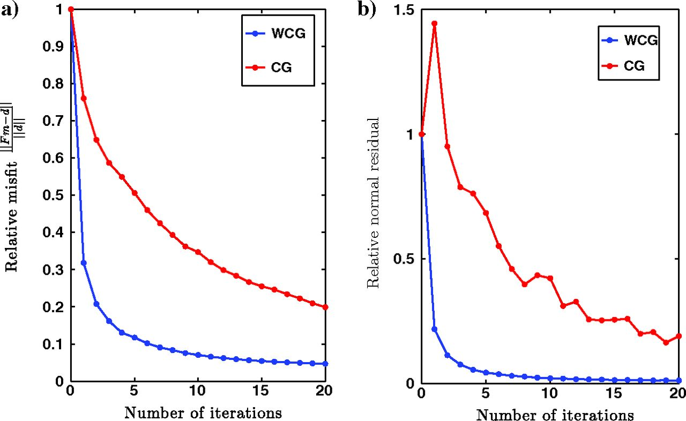
Note
The convergence behavior with wrong velocity is very similar to the correct velocity case — WCG acceleration is robust to velocity error.
DSO Velocity Analysis
Differential Semblance Optimization
DSO Objective Function
In the subsurface-offset domain, the semblance condition requires a focused offset gather. The DSO objective penalizes energy at nonzero offset (Hou and Symes 2018, Eq. 11):
\[ J[v] = \frac{1}{2}\|h\, I(\mathbf{x}, h)\|^2 \tag{5}\]
where \(I(\mathbf{x}, h)\) is the extended image from either RTM (\(\bar{F}^*\)) or the approximate inverse (\(\bar{F}^\dagger\)).
- Minimization penalizes energy outside \(h = 0\) \(\Rightarrow\) focuses the gather
- Focused gather implies correct velocity
- This is the basic idea of DSO-based velocity analysis
RTM vs. Inversion — Objective Function
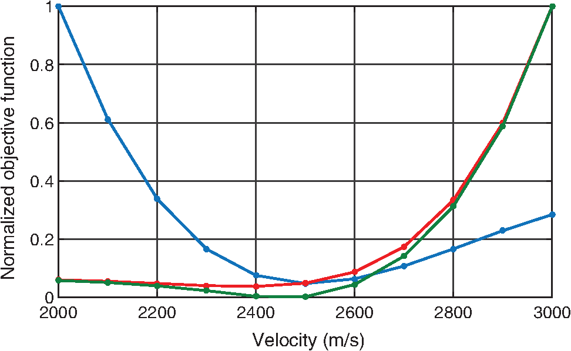
Critical observation
The MVA objective (red) has its minimum shifted to 2400 m/s — the wrong velocity! The IVA objective (blue) correctly minimizes at 2500 m/s. The so-called “gradient artifacts” are actually a problem of the objective function, not the gradient.
Velocity Update Results
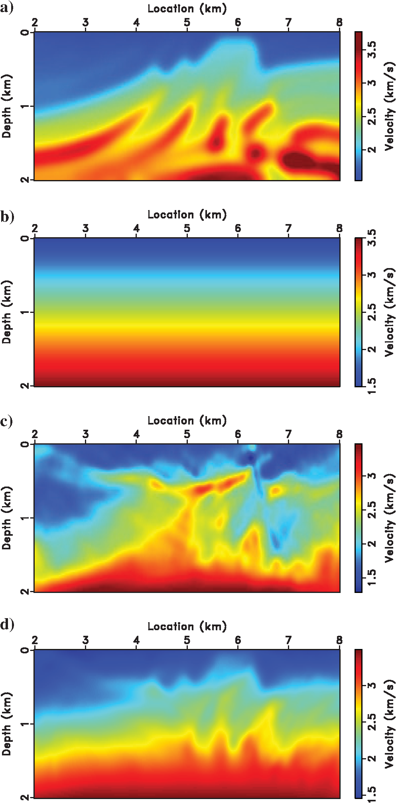
Zero-Offset Images — Velocity Quality
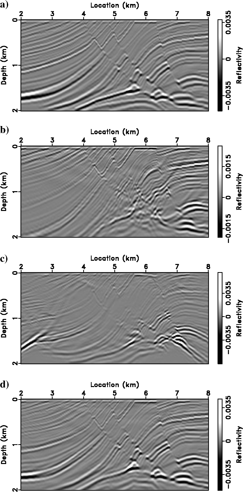
Image Gathers — Focusing Quality
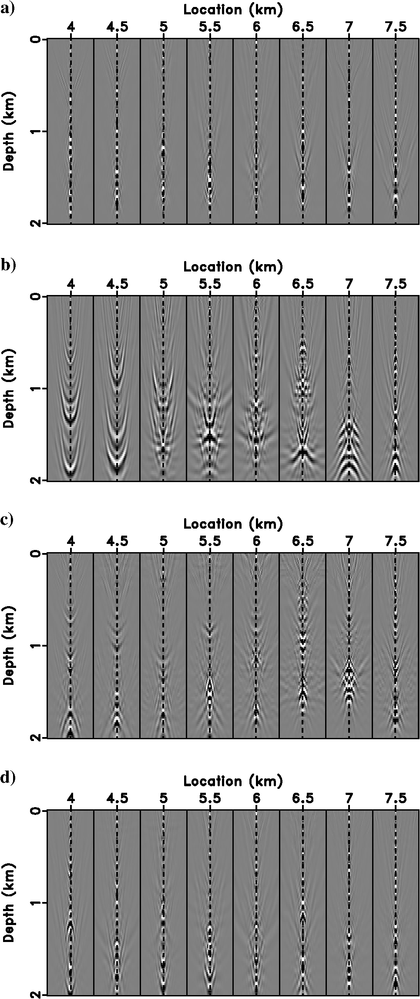
What Goes Wrong?
Artifacts and Limitations of WEMVA
The Artifact Problem
When RTM (the adjoint) is used instead of inversion, artifacts corrupt the velocity update (Hou and Symes 2018):
Fundamental Limitations of WEMVA
Problems with Wave-Equation MVA
Despite the improvements from using the approximate inverse, WEMVA has fundamental issues:
Strong reflectors dominate the objective — The DSO objective \(J = \frac{1}{2}\|h\,I(\mathbf{x},h)\|^2\) is weighted toward high-amplitude events, which may not carry the best velocity information
Fails with strong multiples — Surface-related or internal multiples violate the single-scattering (Born) assumption, corrupting the image gathers and biasing the velocity update
Requires extensive hand-holding — Dip filtering, offset range selection, regularization, and balancing of DSO vs. stack-power terms all require manual tuning
Limited physics — The constant-density acoustic approximation and idealized 2D acquisition geometry are restrictive
The road ahead
These limitations motivate the transition to full-waveform inversion (FWI), which directly fits the data without requiring image-domain proxies. FWI will be the subject of our next lectures.
Summary
- Subsurface-offset extension adds degrees of freedom to match data and model dimensions
- Extended imaging (RTM or approximate inverse) produces offset gathers \(I(\mathbf{x}, h)\)
- Focusing at \(h = 0\) indicates correct velocity; unfocused gathers indicate velocity error
- The approximate inverse \(\bar{F}^\dagger = W_{\text{model}}\,\bar{F}^*\,W_{\text{data}}\) is critical — using RTM alone leads to artifacts in velocity analysis
- Weighted CG dramatically accelerates extended LSM convergence
- DSO provides a smooth, unimodal objective for velocity updates (when using inversion, not adjoint)
- WEMVA has fundamental limitations: strong reflectors, multiples, hand-holding
- Next: Full-waveform inversion — a more direct approach to velocity estimation
Key Takeaway
From image volumes to FWI
The main goal of subsurface-offset image volumes is to obtain estimates for the background velocity model \(v_0\). While WEMVA with the approximate inverse improves upon classical MVA, its fundamental limitations (dominance of strong reflectors, sensitivity to multiples, need for hand-holding) motivate the move to full-waveform inversion, which we cover next.
We leave the directional scattering aspect (AVA/AVP from image gathers) for a later lecture.